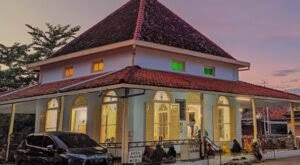

Pekalongan punnya cerita
Mari jelajahi keindahan spiritual di Pekalongan.
Tempat Wisata Religi Populer
Masjid Agung Al-Jami Pekalongan
Makam Habib Ahmad bin Abdullah bin Thalib al-Atthas Pekalongan

Makam Ki Ageng Rogoselo dan Ki Gede Penatas Angin